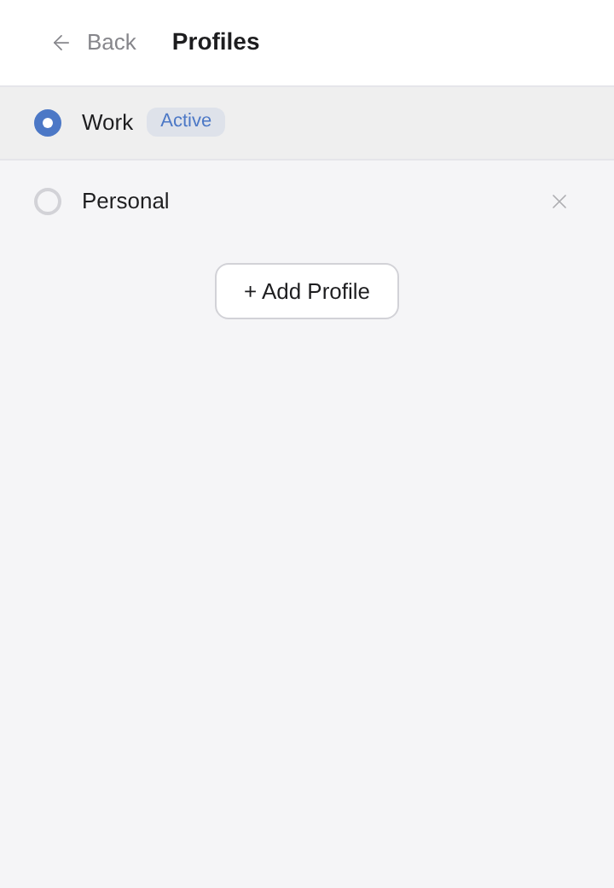
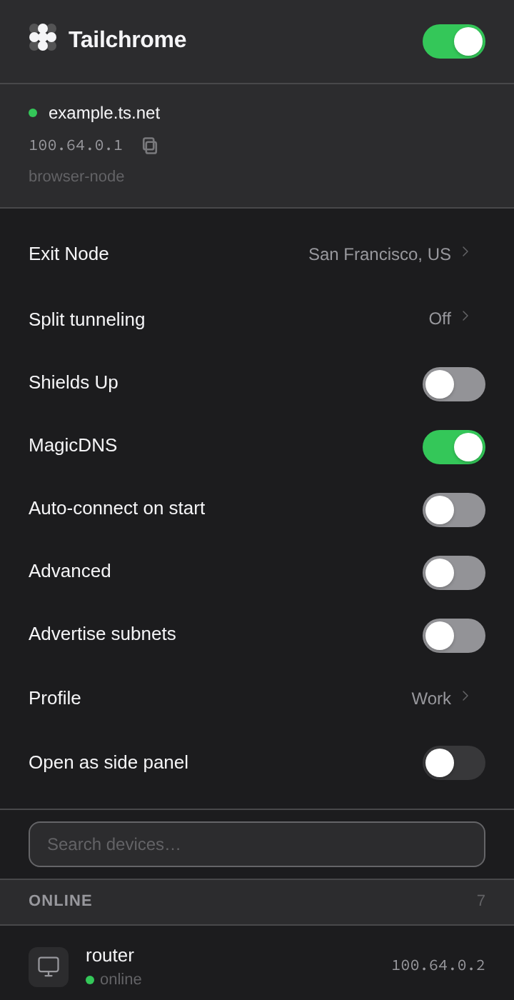

Separate by design
A tailnet for
every profile.
Keep work and personal network identities independent in the same browser.
Keep work and personal network identities independent in the same browser.

